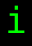
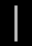
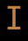
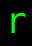
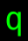

モンスター (Lv05-09) / Monsters (Lv05-09)
出現階層 5〜9 のモンスター（112 種）。名前をクリックすると個別の詳細ページが開きます。
Monsters native to dungeon level 5–9 (112). Click a name for its detail page.
| ID | 記号 / Sym | 名前 / Name | 階層 / Lv | 希少度 / Rar | 速度 / Spd | 体力 / HP | AC | 経験値 / Exp |
|---|---|---|---|---|---|---|---|---|
| 91 | スケルトン・コボルド Skeleton kobold |
5 | 1 | 110 | 5d8 | 26 | 12 | |
| 92 | イウォーク Ewok |
5 | 2 | 110 | 3d5 | 10 | 20 | |
| 93 | 見習メイジ Novice mage |
5 | 2 | 110 | 6d4 | 6 | 7 | |
| 94 | グリーン・ナーガ Green naga |
5 | 1 | 110 | 9d8 | 40 | 30 | |
| 95 | 巨大ヒル Giant leech |
5 | 1 | 120 | 6d8 | 20 | 20 | |
| 96 | バラクーダ Barracuda |
5 | 2 | 120 | 6d12 | 45 | 30 | |
| 98 | ゾッグ Zog |
5 | 2 | 110 | 13d9 | 20 | 25 | |
| 99 | ブルー・ウーズ Blue ooze |
5 | 1 | 110 | 3d4 | 16 | 7 | |
| 100 | 緑の食いしん坊ゴースト Green glutton ghost |
5 | 1 | 130 | 3d4 | 20 | 15 | |
| 101 | グリーン・ゼリー Green jelly |
5 | 1 | 120 | 22d8 | 1 | 18 | |
| 102 | ラージ・コボルド Large kobold |
5 | 1 | 110 | 13d9 | 32 | 25 | |
| 103 | グレイ・ベトベト Grey icky thing |
5 | 1 | 110 | 4d8 | 12 | 10 | |
| 104 | 劣化アイ Disenchanter eye |
5 | 2 | 100 | 7d8 | 10 | 20 | |
| 105 | 赤イモムシの大群 Red worm mass |
5 | 1 | 100 | 5d8 | 12 | 6 | |
| 106 | マムシ Copperhead snake |
5 | 1 | 110 | 4d6 | 20 | 15 | |
| 914 | ホビット『牛うなり』 Bullroarer the Hobbit |
5 | 3 | 120 | 6d10 | 8 | 90 | |
| 956 | 馬 Horse |
5 | 1 | 110 | 11d8 | 30 | 25 | |
| 1020 | クター Kutar |
5 | 4 | 110 | 3d5 | 10 | 20 | |
| 1082 | ジュラル星人 Juralian |
5 | 8 | 105 | 3d6 | 10 | 20 | |
| 1251 | ギンザメ Chimaera |
5 | 2 | 120 | 6d10 | 45 | 30 | |
| 1315 | タカ Hawk |
5 | 2 | 110 | 4d6 | 10 | 18 | |
| 1388 | 河童 Kappa |
5 | 2 | 120 | 5d10 | 10 | 30 | |
| 1397 | ハーフ・イーク Half yeek |
5 | 1 | 110 | 3d7 | 16 | 12 | |
| 1399 | イーク・メイジ Mage yeek |
5 | 1 | 110 | 2d4 | 5 | 16 | |
| 108 | 紫おばけキノコ Purple mushroom patch |
6 | 2 | 110 | 1d1 | 1 | 15 | |
| 109 | 見習プリースト Novice priest |
6 | 2 | 110 | 7d4 | 10 | 7 | |
| 110 | 見習戦士 Novice warrior |
6 | 2 | 110 | 9d4 | 16 | 6 | |
| 111 | ニーベルング Nibelung |
6 | 1 | 110 | 8d4 | 12 | 6 | |
| 112 | 喉を絞める手 Disembodied hand that strangled people |
6 | 2 | 130 | 7d8 | 15 | 20 | |
| 113 | ブラウン・モルド Brown mold |
6 | 1 | 110 | 15d8 | 12 | 20 | |
| 114 | 巨大茶コウモリ Giant brown bat |
6 | 1 | 130 | 3d8 | 15 | 10 | |
| 115 | ネズミ怪物 Rat-thing |
6 | 1 | 120 | 9d10 | 20 | 10 | |
| 116 | 見習アーチャー Novice archer |
6 | 2 | 120 | 6d8 | 10 | 20 | |
| 118 | スナガ Snaga |
6 | 1 | 110 | 8d8 | 32 | 15 | |
| 119 | ガラガラヘビ Rattlesnake |
6 | 1 | 110 | 6d7 | 24 | 20 | |
| 120 | 巨大ナメクジ Giant slug |
6 | 1 | 100 | 12d9 | 25 | 25 | |
| 1337 | 『パクマン』 Pakuman |
6 | 2 | 115 | 10d8 | 15 | 40 | |
| 1396 | レッド・イーク Red yeek |
6 | 1 | 110 | 3d8 | 16 | 15 | |
| 121 | 巨大ピンク・ガエル Giant pink frog |
7 | 1 | 110 | 5d8 | 16 | 16 | |
| 122 | ダークエルフ Dark elf |
7 | 2 | 110 | 7d10 | 16 | 25 | |
| 123 | ゾンビ・コボルド Zombified kobold |
7 | 1 | 110 | 6d8 | 14 | 14 | |
| 124 | 窖に潜むもの Crypt Creep |
7 | 2 | 110 | 6d8 | 12 | 25 | |
| 125 | 腐った死体 Rotting corpse |
7 | 1 | 110 | 8d8 | 20 | 15 | |
| 126 | 洞窟オーク Cave orc |
7 | 1 | 110 | 11d9 | 32 | 20 | |
| 127 | 森蜘蛛 Wood spider |
7 | 3 | 120 | 3d6 | 16 | 15 | |
| 128 | 古代の死霊 Manes |
7 | 2 | 110 | 8d8 | 32 | 16 | |
| 129 | 充血アイ Bloodshot eye |
7 | 3 | 110 | 5d8 | 6 | 15 | |
| 130 | レッド・ナーガ Red naga |
7 | 2 | 110 | 11d8 | 40 | 40 | |
| 131 | レッド・ゼリー Red jelly |
7 | 1 | 110 | 26d8 | 1 | 26 | |
| 132 |  |
緑ベトベト Green icky thing |
7 | 2 | 110 | 5d8 | 12 | 18 |
| 133 | 浮遊霊 Lost soul |
7 | 2 | 110 | 2d8 | 10 | 18 | |
| 134 | 暗黒トカゲ Night lizard |
7 | 2 | 110 | 4d8 | 16 | 35 | |
| 135 | コボルド・ロード『ムガッシュ』 Mughash the Kobold Lord |
7 | 3 | 110 | 15d10 | 20 | 100 | |
| 1404 | ゴースト・イーク Ghost yeek |
7 | 1 | 115 | 3d6 | 8 | 18 | |
| 1405 | ゾンビ・イーク Zombie yeek |
7 | 1 | 105 | 3d6 | 8 | 18 | |
| 1406 | 骸骨イーク Skeleton yeek |
7 | 1 | 110 | 3d6 | 8 | 18 | |
| 107 |  |
デスソード Death sword |
8 | 5 | 130 | 6d6 | 40 | 30 |
| 136 | スケルトン・オーク Skeleton orc |
8 | 1 | 110 | 10d8 | 36 | 26 | |
| 137 | サルマンの間者『ヘビの舌』 Wormtongue, Agent of Saruman |
8 | 2 | 110 | 25d10 | 30 | 150 | |
| 138 | 無法者『ロビン・フッド』 Robin Hood, the Outlaw |
8 | 2 | 120 | 14d12 | 30 | 150 | |
| 139 | ナーグリング Nurgling |
8 | 2 | 110 | 9d9 | 32 | 19 | |
| 140 | スナガ『ラグドゥフ』 Lagduf, the Snaga |
8 | 2 | 110 | 19d10 | 32 | 80 | |
| 141 | ブラウン・イーク Brown yeek |
8 | 1 | 110 | 4d8 | 18 | 11 | |
| 142 | 見習レンジャー Novice ranger |
8 | 1 | 110 | 6d8 | 6 | 18 | |
| 143 | ジャイアント・サラマンダー Giant salamander |
8 | 1 | 110 | 6d7 | 40 | 50 | |
| 144 | スペース・モンスター Space monster |
8 | 2 | 110 | 21d8 | 14 | 28 | |
| 145 | 空飛ぶ人喰い猿 Carnivorous flying monkey |
8 | 2 | 110 | 22d9 | 20 | 30 | |
| 146 | グリーン・モルド Green mold |
8 | 2 | 110 | 21d8 | 14 | 28 | |
| 147 | 見習パラディン Novice paladin |
8 | 2 | 110 | 6d8 | 16 | 20 | |
| 148 | レムレース Lemure |
8 | 3 | 110 | 13d9 | 32 | 16 | |
| 149 | 丘オーク Hill orc |
8 | 1 | 110 | 13d9 | 32 | 25 | |
| 150 | 追い剥ぎ Bandit |
8 | 2 | 110 | 8d8 | 24 | 26 | |
| 151 | ジュリアンの猟鷹 Hunting hawk of Julian |
8 | 2 | 120 | 8d8 | 25 | 22 | |
| 152 | 幽体戦士 Phantom warrior |
8 | 1 | 110 | 5d5 | 10 | 15 | |
| 153 | グレムリン Gremlin |
8 | 3 | 110 | 5d5 | 30 | 6 | |
| 867 |  |
カルヴァリン Culverin |
8 | 2 | 110 | 8d5 | 13 | 25 |
| 997 | チォコヴォ Chiokovo |
8 | 3 | 110 | 8d8 | 35 | 20 | |
| 1012 | 自縛霊 Jibaku ghost |
8 | 2 | 110 | 20d5 | 10 | 20 | |
| 1054 | 見習超能力者 Novice mindcrafter |
8 | 1 | 110 | 6d8 | 10 | 18 | |
| 1095 | スナガ『ムズガッシュ』 Muzgash, the Snaga |
8 | 2 | 110 | 18d9 | 30 | 80 | |
| 1214 | ドラウグル Draugr |
8 | 1 | 110 | 10d9 | 20 | 25 | |
| 1222 | ファルメル Falmer |
8 | 2 | 110 | 11d11 | 15 | 32 | |
| 1282 | 盗賊『鼠小僧』 Nezumi-Kozou, the Thief |
8 | 2 | 120 | 14d12 | 30 | 150 | |
| 154 | イエティ Yeti |
9 | 3 | 110 | 11d9 | 24 | 30 | |
| 155 | 充血ベトベト Bloodshot icky thing |
9 | 3 | 110 | 7d8 | 18 | 24 | |
| 156 | 巨大ドブネズミ Giant grey rat |
9 | 1 | 110 | 2d3 | 12 | 2 | |
| 157 | ブラック・ハーピー Black harpy |
9 | 1 | 120 | 3d8 | 22 | 19 | |
| 158 |  |
スケイヴン Skaven |
9 | 1 | 110 | 11d9 | 25 | 20 |
| 159 | 『手負いの熊』 The Wounded Bear |
9 | 1 | 110 | 10d10 | 35 | 25 | |
| 160 | カツオノエボシ Portuguese man-o-war |
9 | 2 | 110 | 10d10 | 30 | 25 | |
| 161 | 岩もぐら Rock mole |
9 | 2 | 110 | 11d11 | 30 | 25 | |
| 162 | オーク・シャーマン Orc shaman |
9 | 1 | 110 | 9d8 | 15 | 30 | |
| 163 | ベビー・ブルー・ドラゴン Baby blue dragon |
9 | 1 | 110 | 10d10 | 30 | 35 | |
| 164 | ベビー・ホワイト・ドラゴン Baby white dragon |
9 | 1 | 110 | 10d10 | 30 | 35 | |
| 165 | ベビー・グリーン・ドラゴン Baby green dragon |
9 | 1 | 110 | 10d10 | 30 | 35 | |
| 166 | ベビー・ブラック・ドラゴン Baby black dragon |
9 | 1 | 110 | 10d10 | 30 | 35 | |
| 168 | 巨大赤アリ Giant red ant |
9 | 2 | 110 | 4d8 | 34 | 22 | |
| 169 | 東夷『ブロッダ』 Brodda, the Easterling |
9 | 2 | 110 | 21d10 | 25 | 100 | |
| 170 | 狼『血塗られし牙』 Bloodfang the Wolf |
9 | 1 | 120 | 6d6 | 30 | 30 | |
| 171 | キング・コブラ King cobra |
9 | 2 | 110 | 8d10 | 30 | 28 | |
| 172 | 鷲 Eagle |
9 | 2 | 120 | 9d9 | 25 | 22 | |
| 173 | 闘熊 War bear |
9 | 1 | 110 | 10d10 | 35 | 25 | |
| 174 | 殺人蜂 Killer bee |
9 | 2 | 120 | 2d4 | 34 | 22 | |
| 217 | スケイヴン・シャーマン Skaven shaman |
9 | 1 | 110 | 10d8 | 15 | 36 | |
| 957 |  |
あばれ馬 Unruly horse |
9 | 2 | 110 | 12d10 | 30 | 35 |
| 1063 | 巨大白シラミの王『lousy』 Lousy, the King of Lice |
9 | 3 | 130 | 11d11 | 10 | 100 | |
| 1081 | チャージマン『研』 Ken, the Charge Man |
9 | 10 | 120 | 14d14 | 30 | 150 | |
| 1089 | 『ジュラルの魔王』 The Witch-King of Jural |
9 | 3 | 112 | 12d12 | 25 | 100 | |
| 1398 | イークの兵卒 Private yeek |
9 | 1 | 110 | 4d7 | 20 | 20 | |
| 1400 | イークのスリ Pickpocketor yeek |
9 | 1 | 115 | 3d4 | 10 | 16 | |
| 1401 | イークのひったくり Snatcher yeek |
9 | 1 | 115 | 3d4 | 10 | 16 | |
| 1403 | イーク・ハイメイジ High mage yeek |
9 | 1 | 110 | 2d5 | 6 | 22 |
🤖 このページは
lib/edit/MonraceDefinitions.jsoncから自動生成されています。手動で編集しないでください — 変更は次回の再生成で上書きされます。 This page is auto-generated fromlib/edit/MonraceDefinitions.jsonc. Do not edit by hand — changes are overwritten on regeneration. 生成 / Generated: 2026-07-04 00:54 UTC · hengband5ebae9734·tools/generate-wiki.mjs